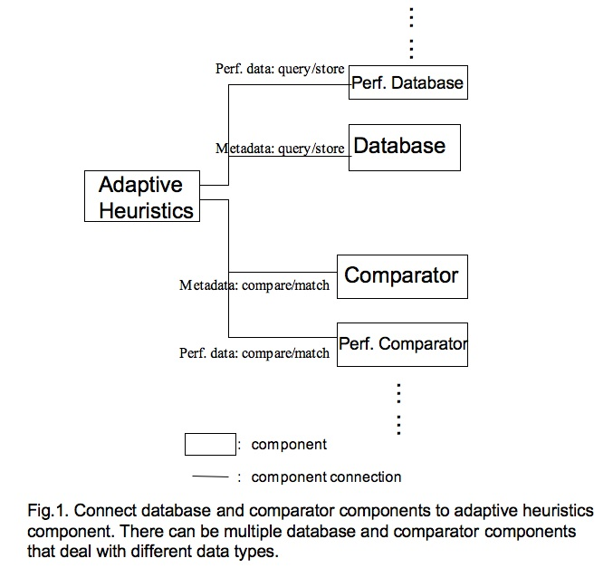

|
CCA Wiki
|
CQoS Database Component Interfaces
Database component interface designThe preliminary database interfaces result from discussion at CQoS BOF session at october CCA meeting. The goals of this interface design is to store meta-data and performance outcome of experiment runs into a database and to query the database to find out problem parameters and solvers that fit for a new problem. Figure 1 shows how the proposed new components - database and comparator components - work with adaptive heuristic components (referred to as adaptors in following discussion). The database component provides interfaces for storing and accessing data in a physic database. The comparator interfaces compare and/or match properties of two problems under user-specified conditions.  Component interfacesThere are three interfaces associated with comparator component, parameter, parameter set, and comparator. A parameter captures characteristics of one single property of problem, e.g., a parameter setting of a meta-partitioner, or a property of a linear system. A parameter is characterized by its name, data type, value. It is associated with a table where it is stored in the physical database. The parameter interfaces also support comparison against another peer parameter under user-specified conditions. interface Parameter {
void setName(in string name);
void setDataType(in int type);
void setValue[Int](in int value);
void setValue[Long](in long value);
void setValue[Double](in double value);
void setValue[String](in string value);
void setTBName(in string tbName);
string getName();
int getDataType();
void getValue[Int](out int value);
void getValue[Long](out long value);
void getValue[Double](out double value);
void getValue[String](out string value);
string getTBName();
bool compareWith(in Parameter& another, in double tolerance, in int relation);
string getDBConditions(in int tbIndex, in double tolerance, in int relation);
}
A ParameterSet? represents a group of related parameters, e.g., a set of parameters that characterize an AMR grid, or a category of linear system properties. Through ParameterSet? interfaces, users can manage parameter memebers and compare against another peer parameter set. interface ParameterSet {
void addAParameter(in Parameter aParam);
int getNumOfParameters();
Parameter getParameterAt(in int index);
Parameter getParameterAt(in string name);
string getTBName();
bool compareWith(in ParameterSet another, in map<string, double> tMap, in map<string, int> rMap);
string getDBConditions(in array<int> tbIndices, in map<string, double> tMap, in map<string, int> rMap)
}
Each comparator component provides a Comparator port, through which the adaptor passes over parameter sets to compare them. For instance, the Comparator can determine if two set of parameters are within {€} of each other. A performance comparator that implements the interfaces can determine which one is the better of 2 sets of performance results. interface Comparator extends gov.cca.Port {/* Comparison operations between parameter sets */
void setLHS(in ParameterSet lefthand);
void setRHS(in ParameterSet righthand);
ParameterSet getLHS();
ParameterSet getRHS();
int getDimension();
Parameter getLHSParameterAt(in string paraName);
Parameter getRHSParameterAt(in string paraName);
void setToleranceAt(in string name, in double epsilon);
double getToleranceAt(in string name);
void setRelationAt(in string name, in int aRelation);
int getRelationAt(in string name);
bool doCompare();
}
There are two interfaces associated with database component, DB and Outcome. The adaptor connects to a database component through DB port, through which it can get connected to the physical database, execute queries, store parameters and parameter set, retrieve desirable parameters, parameter sets. DB components also support the query of trials whose parameter sets satisfy user-specified conditions, e.g., whether the parameter set is within a [lower, upper] range, or within {€} of a value set. interface DB extends gov.cca.Port{
bool connect();
bool disconnect();
bool isClosed();
void setConnectionInfo(in string info);
string getConnectioninfo();
int bindParameters(in int param, in int argument);
int bindParameters(in int param, in long argument);
int bindParameters(in int param, in double argument);
int bindParameters(in int param, in string argument);
void bindCommand();
void resetQuery();
int executeQuery_bindParam(in string commd, out Outcome res);
int executeQuery(in string commd, out Outcome res);
int executeInsert(in string commd);
void storeParameter(in int trialID, in int iterNo, in Parameter aParam);
void storeParameterSet(in int trialID, in int iterNo, in ParameterSet aParamSet);
void getParameter(in int trialID, int iterNo, inout Parameter aParam); // get parameter value
void getParameterSet(in int trialID, int iterNo, inout ParameterSet aParamSet);// get parameter set value
int getMatchingTrialsBetween(in ParameterSet lower, in ParameterSet upper, out Outcome trialIDs);
int getMatchingTrials(in ParameterSet lower, in vector<doule> epsilons, out Outcome trialIDs);
}
Outcome interfaces transform data results returned back from a DB query to use-readable format, and support accesses to the data elements. interface Outcome {
int setElements(in opaque res); // res type is decided by the DBMS, e.g., PGresult in PostgreSQL)
int getNumberOfRows();
int getNumberOfColumns();
int getElement[Long](in int row, in int column, out long res);
int getElement[Double](in int row, in int column, out double res);
int getElement[String](in int row, in int column, out string res);
int getElement[Long](in int row, in string columnName, out long res);
int getElement[Double](in int row, in string columnName, out double res);
int getElement[String](in int row, in string columnName, out string res);
void clear();
}
Use the interfaces in a linear solver application - 2D driven-cavity exampleNext we use a 2D driven-cavity example to show how to use the proposed interfaces. This code snippet stores a parameter set of two matrix properties into database.
/* instantiate parameter 1 */
ierr = ComputeQuantity(matrix,"icmk","splits",&res,&flg); CHKERRQ(ierr);
MatrixProperty param1("splits", "matrix_meta", res.i);
/* instantiate parameter 2 */
ierr = ComputeQuantity(matrix,"structure","nnzeros",&res,&flg); CHKERRQ(ierr);
MatrixProperty param2("nnzeros", "matrix_meta", res.i);
/**** Store matrix property set into database. ***/
int myRank;
ierr = MPI_Comm_rank(PETSC_COMM_WORLD, &myRank); CHKERRQ(ierr);
if (myRank == 0){
int localID;
int trialID;
string conninfo("dbname = perfdb");
/* Generate a runtime database manager. It connects to a PostgreSQL database through DB interfaces. */
RunTimeRecord *R = RunTimeRecord::instance();
R->Connect2DB(conninfo);
trialID = R->getTrialID();
localID = R->getCurEvtID(cflStr);
/* instantiate a parameter set */
PropertySet aSet;
/* add parameter 1 and 2 into the set */
aSet.addAParameter(¶m1);
aSet.addAParameter(¶m2);
/* store the parameter set into database, */
R->loadParameterSet(trialID, localID, aSet);
}
/**** End storing matrix properties into database. ***/
Current status and plans to use the interfaces in other problem domains (e.g., combustion and quantum chemistry)We have developed a functional C++ library which inplements the above database interfaces. We have tested the codes on 2D Driven cavity application, in which the interfaces store and query matrix properties oflinear systems during runtime. We are now wrapping the database codes with SIDL interface and developing them into CCA-compliant components. We'd like to hook up the database interfaces with applications from other problem domians, such as combustion and quantum chemistry, that require the use of database to choose solvers. You can either grab the C++ library and integrate to your code, or share with us your source code that requires the use of database so we can experiment and test the interfaces on your code. Created by: likli last modification: Thursday 06 of December, 2007 [00:17:55 UTC] by likli |
Login Online users
5
online users
|
![[hide]](javascript:icntoggle('mod-mnu_application_menu','mo.png');)